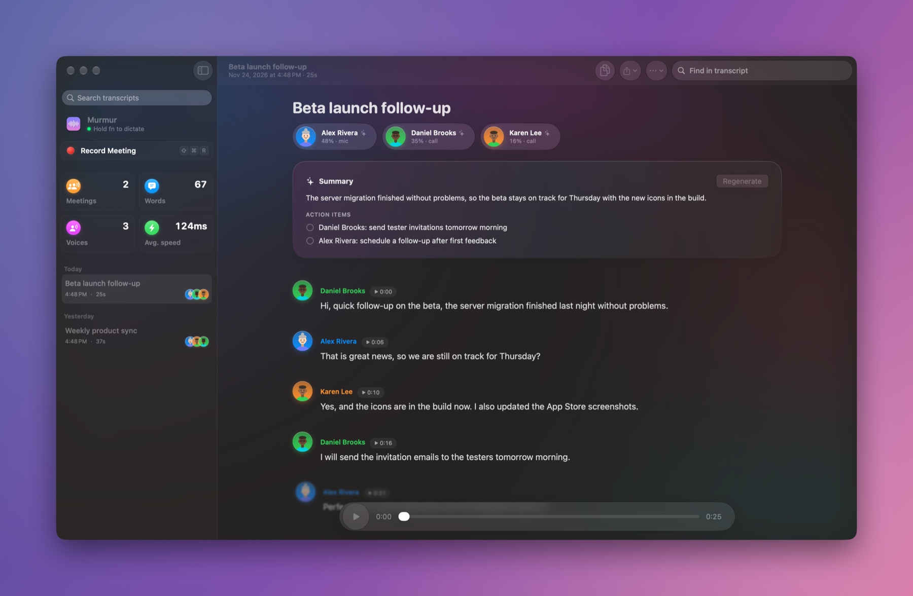
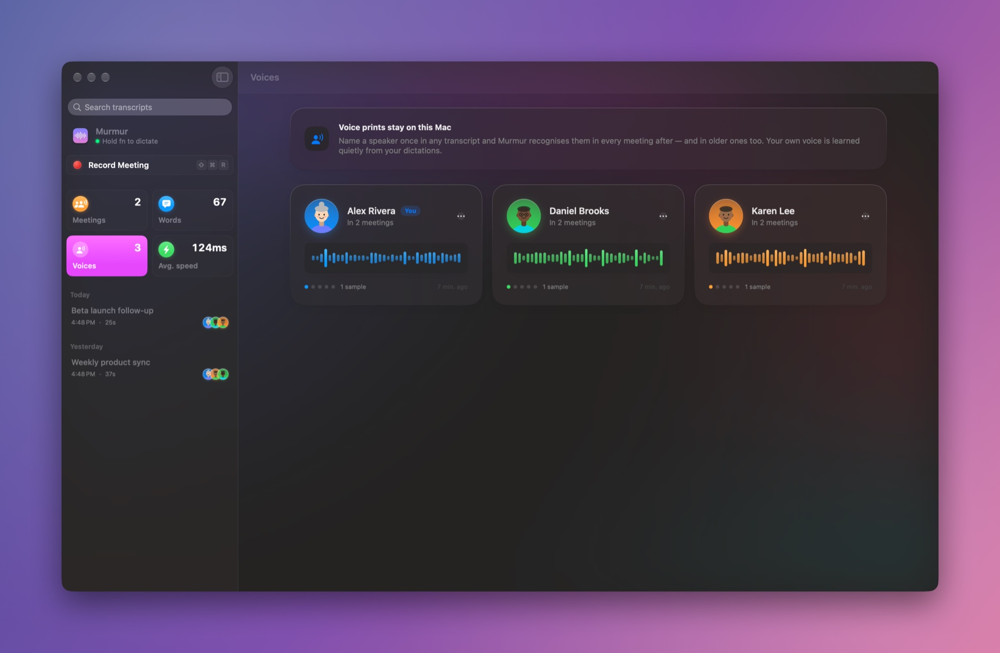

Murmur is free dictation and meeting transcription for Mac. It types into any app, tells you who said what in your meetings, and remembers voices. It all runs on your Mac.
Real speed: Murmur typically transcribes a sentence in about 100 ms, on the Neural Engine.
Dictation
Mail, Slack, Notes, your browser or your code editor: if it has a text field, Murmur can type into it. No new window, no copy and paste.
Hold fn while you speak and let go when you're done. The text appears where your cursor is.
Longer thought? Double-tap fn to keep listening hands-free, then tap once to finish. esc cancels.
NVIDIA's Parakeet model runs on Apple's Neural Engine. A typical sentence comes back in about a tenth of a second.
Murmur checks what's already around your cursor, so spaces and capital letters come out right when you continue a sentence.
Text goes in through a brief paste, then your clipboard is put back exactly as it was.
Every dictation is saved in a timeline, marked with the icon of the app it went into, ready to copy again.
Meetings
One click records your microphone and the call from Zoom, Meet, Teams or any other app. When you stop, Murmur writes a clean transcript, works out who's speaking and, if you like, summarises it.

Voice prints
The first time Daniel speaks, he's "Speaker 2". Tap him, type his name, and that's it: Murmur recognises his voice in every meeting after this one, and goes back and labels your older ones too.
Voice prints are numeric fingerprints, not recordings. They never leave your Mac, and you can rename or forget one any time.

Privacy
Most dictation and meeting tools send your audio to someone's server. Murmur doesn't have a server.
Speech recognition, speaker identification and summaries all run locally on Apple Silicon.
No sign-up, no analytics, no telemetry. The only download is the open-source model, the first time you launch.
Every line is on GitHub under the MIT license. Read it, build it yourself or change it.
Install
FAQ
Yes. Murmur is free and open source under the MIT license, with no paid tier, no trial and no account.
Yes. After a one-time download of the speech model, dictation, meeting transcription, speaker identification and summaries all run without an internet connection.
The default Parakeet model handles 25 European languages, including English, German, French, Spanish and Italian. An English-only model with even higher recall is one click away in Settings.
Murmur combines push-to-talk dictation and meeting transcription in one free, open-source app. Everything runs locally on the Neural Engine using NVIDIA's Parakeet model, which is very fast, and it remembers people across meetings by their voice.
Yes. Murmur records system audio through a Core Audio tap, so it captures any call app without joining as a bot and without screen-recording permission. It records your microphone on a separate track, so it can tell you apart from the people on the call.
An Apple Silicon Mac running macOS 26 or later. Summaries need Apple Intelligence to be turned on.